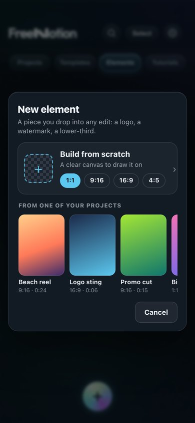
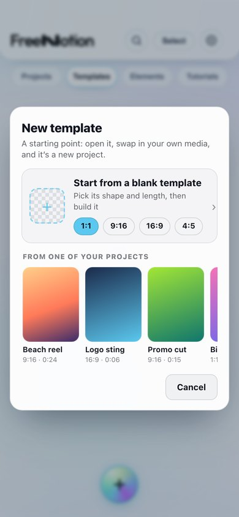
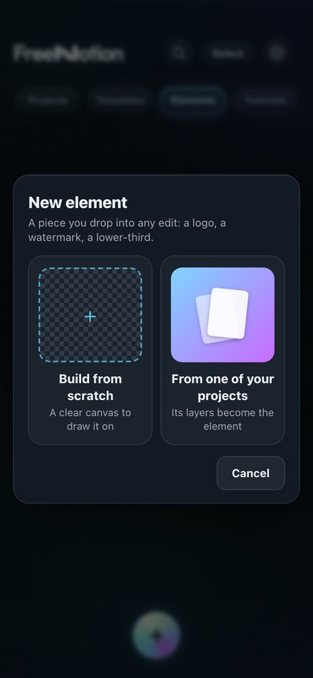
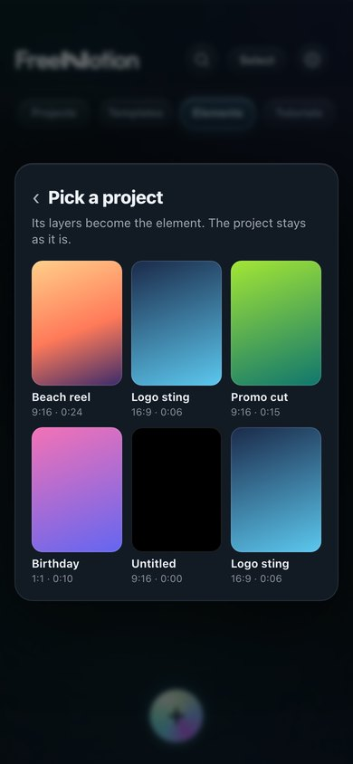
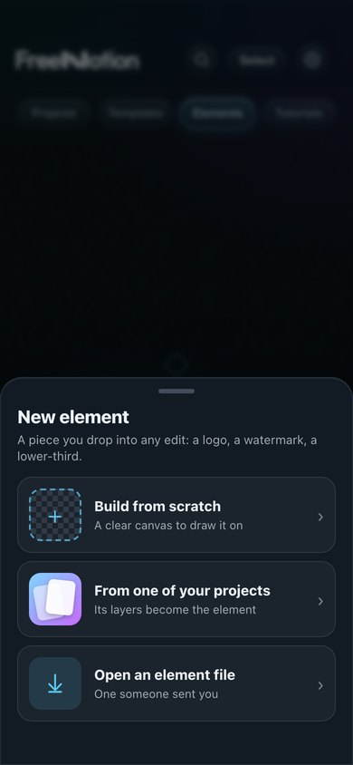
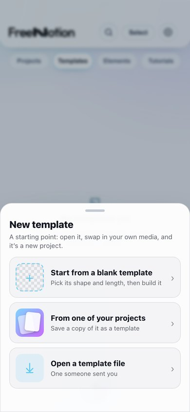

You: “the plus button still just open up a shitty tiny menu instead of like a proper thought out one … I do want elements and templates to be their own things, not just reskinned projects.”
Today the + in those two tabs opens a small text menu. Here are three real menus, drawn over your real Home (the project pictures inside are stand-ins). Every option adds something you can't do today: starting a template from nothing.
Pick a menu
A · Everything on one card RECOMMENDED
One tap either way. Choose a shape and start from scratch, or tap one of your projects in the row below (it scrolls sideways). It has the same card look as New project.

Elements tab, dark Home

Templates tab, light Home
B · Two big choices
Two picture tiles. From a project slides over to a full page of your projects. It's the calmest to look at, but it takes one more step.

First screen

After From a project
C · A sheet from the bottom
A sheet slides up from the + with three big rows, including a new one: open a file someone sent you. It's the easiest to reach with a thumb, but it shows no pictures until you pick a row.

Elements, dark

Templates, light
What's still “a reskinned project”
You asked me to check. I read the code, and here's what still treats them as projects:
A template can only be a copy of a project. There's no way to start one from nothing.Fixed by whichever menu you pick.
A new element is really a hidden project. It only becomes an element if you remember ⋯ → Save as element. Until then it sits in Elements as a “draft”.Fix: it saves itself as an element when you leave, the way editing an existing one already does.
Editing a template or element looks exactly like editing a project. Same bar, same Export button, and nothing says what you're editing.Fix: a slim bar saying “Editing element: Logo sting · Done”, and no Export button while you're in it.
Sharing a template saves a project file, so it opens as a project on the other phone. Elements can't be shared at all.Fix: their own file types, so they open straight into Templates and Elements (C's “Open a file” row needs this).
Tapping a template makes a project straight away. That's #619, which is waiting on your answer about swapping in your own media.
Two picks
1. A, B or C?A recommended.
2. Fix 2, 3 and 4 from the list above?All three recommended. Each one becomes its own item in your list.